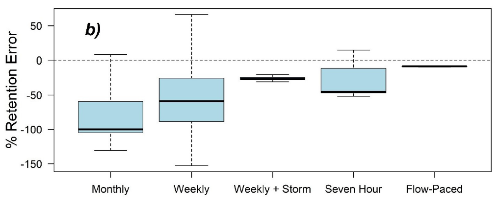
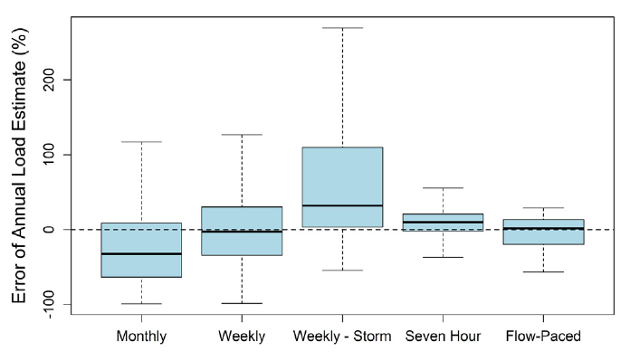

River restoration spending in the continental United States has averaged an estimated $1 billion per year since 1990 (Bernhardt et al., 2005). Many restoration projects aim to meet regulatory water quality goals by reducing sediment and nutrients (Clune et al., 2026). High concentrations of total suspended solids (TSS) can block sunlight, alter water temperature, lower dissolved oxygen, and transport phosphorus downstream, degrading aquatic habitats and communities (Bilotta & Brazier, 2008). Restoration managers and funders rely on monitoring data to evaluate projects and inform future restoration efforts (Thompson et al., 2021). But what if the results depend on when samples are taken? A study simulating five sampling methods in a restored stream found large differences in TSS retention estimates (Thompson et al., 2021). True retention for the restored stream reach was −57.1%, the median retention estimate for weekly sampling was −115.8%, individual estimates ranged from +71.7% to −187.8%. This indicates that the same stream can appear to retain or export sediment. This is measurement bias, which occurs when sampling measurements are not accurate or precise enough (Konno et al., 2024). Thompson et al. (2021) show that sampling timing and frequency can reduce measurement accuracy and precision, changing how successful restorations appear.
Testing Five Sampling Methods
Researchers at the Smithsonian Environmental Research Center examined a 145-meter restored stream that drains into the South River estuary of Chesapeake Bay. The reach was restored in 2016 by raising the streambed and installing rock weirs to increase sediment and water storage (Thompson et al., 2021). This study aimed to measure sediment retention and identify accurate, cost-effective sampling methods. Reach inlet and outlet sensors recorded turbidity and water level every 15 minutes. Autosamplers collected water samples every 15 minutes during storm events and weekly or bi-weekly during non-storm conditions. TSS concentrations were measured and used to develop a linear regression model converting turbidity into a near-continuous TSS record. Although the restoration aimed to store sediment, this record showed −57.1% retention, indicating the reach exported more sediment than it received. The researchers then assessed five sampling methods: monthly, weekly, weekly with additional storm sampling, seven-hour, and flow-paced. The methods were simulated using repeated random sampling with replacement from the high-frequency TSS record, and results were compared to the true retention value (−57.1%) to evaluate accuracy and precision (Thompson et al., 2021). Although all five sampling methods correctly identified the reach as a sediment exporter, their estimates varied in accuracy and precision. Monthly sampling was the least accurate, with a median estimate of −157.1%, and weekly sampling had the lowest precision. Flow-paced sampling was the most accurate and precise, with a median estimate of −65.3% and the least variation.

These differences highlight how measurement bias occurs due to choice of sampling timing and frequency. In flashy streams, a large proportion of the annual sediment loads can be exported by a few storms. Low-frequency sampling methods, such as monthly sampling, can miss short high-flow events. In contrast, oversampling during storm events can overestimate sediment loads (Thompson et al., 2021). The same pattern appeared in a synthesis of 28 years of high-frequency data from 15 watersheds in Europe and North America. Monthly sampling underestimated annual sediment loads by a median of 32.4%, while weekly sampling with additional storm samples overestimated loads by a median of 32.0% (Thompson et al., 2021). Both methods had low precision. Seven-hour sampling overestimated loads by a median of 9.9% but was the most precise, and flow-paced sampling was the most accurate, with a median error of only 1.6%.

These results show sampling timing and frequency can cause large errors in monitoring estimates, leading to misinformed conclusions of restoration efforts. Agencies evaluating restorations based on low-frequency monitoring could make management and funding decisions based on unreliable estimates (Thompson et al., 2021).
How Timing Creates Bias
Temporal bias helps explain how this measurement bias occurred. Olteanu et al. (2019) describe temporal bias as systematic differences in data caused by changes in populations or behaviors over time. It can be introduced early in a study through choices in research design and data collection methods (Olteanu et al., 2019). Although Olteanu et al. developed this framework for social data, it can be applied to streams, where the “behavior” that changes over time is flow and TSS concentration, which can increase rapidly during storms. In this study, monthly and weekly samples were collected only on weekdays during daytime hours (Thompson et al., 2021), an example of the infrequent data collection Olteanu et al. describe as missing short-term events.
Olteanu et al. (2019) also explain that these biases can threaten construct validity, which refers to whether a measurement accurately reflects what is being studied. TSS measurements are used to evaluate restoration success, but Thompson et al. (2021) showed that some sampling methods misrepresent annual sediment loads. This highlights the importance of selecting sampling methods that match how conditions change, although that choice can be limited by available resources.
Reducing Bias
These biases are best addressed where they are introduced, during research design and data collection (Olteanu et al., 2019). Within budget constraints, monitoring programs should select methods that accurately and precisely measure stream conditions. Thompson et al. (2021) found flow-paced sampling to be the most accurate and cost-effective method for estimating annual sediment loads. With this method, sampling frequency is proportional to stream flow, so more samples are collected during high-flow events. Samples are combined into weekly composites, reducing the number of lab analyses compared to higher-frequency sampling. However, flow-paced sampling requires an autosampler and flow logger, which is not appropriate for monitoring short-term changes in stream conditions or parameters that do not vary directly with streamflow.
Some monitoring programs, including monitoring in Maryland, increase sampling during storm events to measure high-flow conditions (Thompson et al., 2021). Increased sampling during storm events can overrepresent periods of high sediment export and overestimate annual sediment loads. Evaluating whether sampling methods capture true stream conditions is especially important for organizations with limited resources.
Sampling With Limited Resources
In my experience at an environmental nonprofit, water quality monitoring was funded through grants and conducted by college interns. Limited funding influenced the sampling methods used, including equipment quality and sampling frequency. Sampling timing also depended on intern availability. Although this monitoring tracked general water quality parameters, including turbidity, rather than evaluating restoration projects, this study made me question whether the sampling schedule adequately captured changes over time. Because sampling was based on staffing rather than stream conditions, some conditions may have been underrepresented, potentially introducing temporal bias. Reducing temporal bias may require not just better methods, but the resources to use them.
For organizations with limited resources, comparing their selected sampling method with a short period of high-frequency monitoring similar to Thompson et al.’s (2021) approach could show whether their methods accurately reflect stream conditions. Evaluating sampling methods is important for assessing other water quality parameters. Audet et al. (2014) compared grab, time-proportional, and passive flow-proportional sampling for nitrogen and phosphorus in two streams, using hourly time-proportional sampling as the reference for true loads. Passive sampling had low accuracy for estimating annual nutrient loads, and grab sampling usually underestimated annual phosphorus loads and underrepresented short high-flow events. Previous studies showed time-proportional sampling had high precision, but lower accuracy than flow-proportional sampling for phosphorus (Audet et al., 2014). Audet et al. did not find a clear relationship between cost and quality of sampling methods.
Monitoring and funding plans should consider project objectives, equipment, staffing, and lab costs needed to collect representative data. When more accurate methods are not feasible, researchers should document these limitations, explain why methods were chosen, and acknowledge how these choices may affect measurements and results. Understanding and communicating these limitations is essential for data transparency. Conclusions drawn from monitoring data depend not only on what is measured but also on when and how often samples are collected.
References
Audet, J., Martinsen, L., Hasler, B., de Jonge, H., Karydi, E., Ovesen, N. B., & Kronvang, B. (2014). Comparison of sampling methodologies for nutrient monitoring in streams: Uncertainties, costs and implications for mitigation. Hydrology and Earth System Sciences, 18, 4721–4731. https://doi.org/10.5194/hess-18-4721-2014
Bernhardt, E. S., Palmer, M. A., Allan, J. D., Alexander, G., Barnas, K., Brooks, S., Carr, J., Clayton, S., Dahm, C., Follstad-Shah, J., Galat, D., Gloss, S., Goodwin, P., Hart, D., Hassett, B., Jenkinson, R., Katz, S., Kondolf, G. M., Lake, P. S., . . . Sudduth, E. (2005). Synthesizing U.S. river restoration efforts. Science, 308(5722), 636–637. https://doi.org/10.1126/science.1109769
Bilotta, G. S., & Brazier, R. E. (2008). Understanding the influence of suspended solids on water quality and aquatic biota. Water Research, 42(12), 2849–2861. https://doi.org/10.1016/j.watres.2008.03.018
Clune, J. W., Noe, G. B., Cashman, M., DeWitt, J. D., Bell, J. M., Weaver, M. R., Colgin, J. E., Doody, T. R., Gross, E. L., & Cortes, V. S. (2026). Sediment response to stream restoration in an agricultural watershed. Ecological Engineering, 232, Article 108082. https://doi.org/10.1016/j.ecoleng.2026.108082
Konno, K., Gibbons, J., Lewis, R., & Pullin, A. S. (2024). Potential types of bias when estimating causal effects in environmental research and how to interpret them. Environmental Evidence, 13, Article 1. https://doi.org/10.1186/s13750-024-00324-7
Olteanu, A., Castillo, C., Diaz, F., & Kıcıman, E. (2019). Social data: Biases, methodological pitfalls, and ethical boundaries. Frontiers in Big Data, 2, Article 13. https://doi.org/10.3389/fdata.2019.00013
Thompson, J., Pelc, C. E., & Jordan, T. E. (2021). Water quality sampling methods may bias evaluations of watershed management practices. Science of the Total Environment, 765, Article 142739. https://doi.org/10.1016/j.scitotenv.2020.142739
AI Use Statement
I used the Grammarly AI writing assistant to review grammar, spelling, punctuation, reduce word count, and check against the rubric. I reviewed and finalized all content.
Citation
@online{moran2026,
author = {Moran, Veronica},
title = {Same {Stream,} {Conflicting} {Results:} {Measurement} {Bias}
in {Restoration} {Monitoring}},
date = {2026-11-23},
url = {https://veronica-moran.github.io/posts/2026-11-23-bias-blog/},
langid = {en}
}